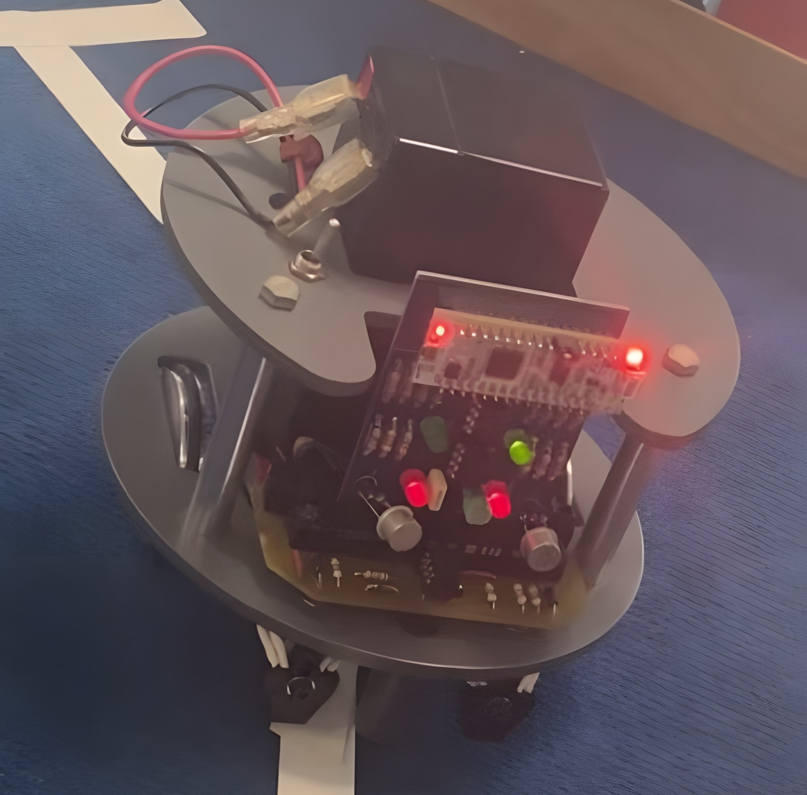
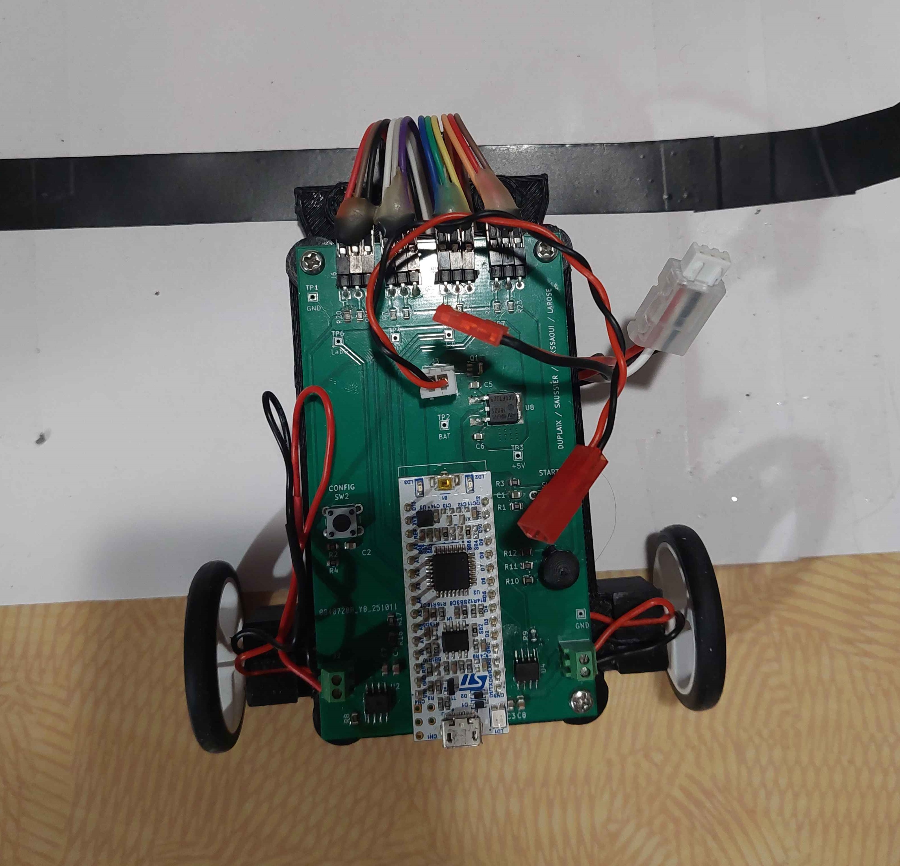
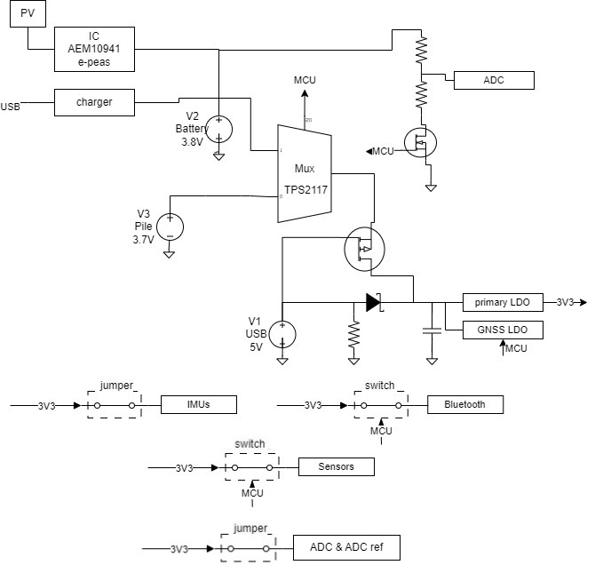
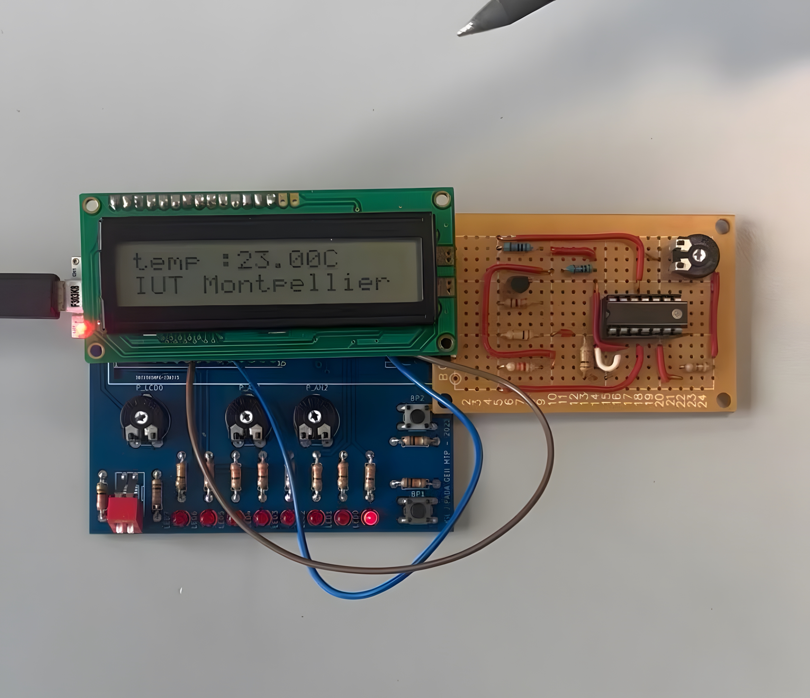
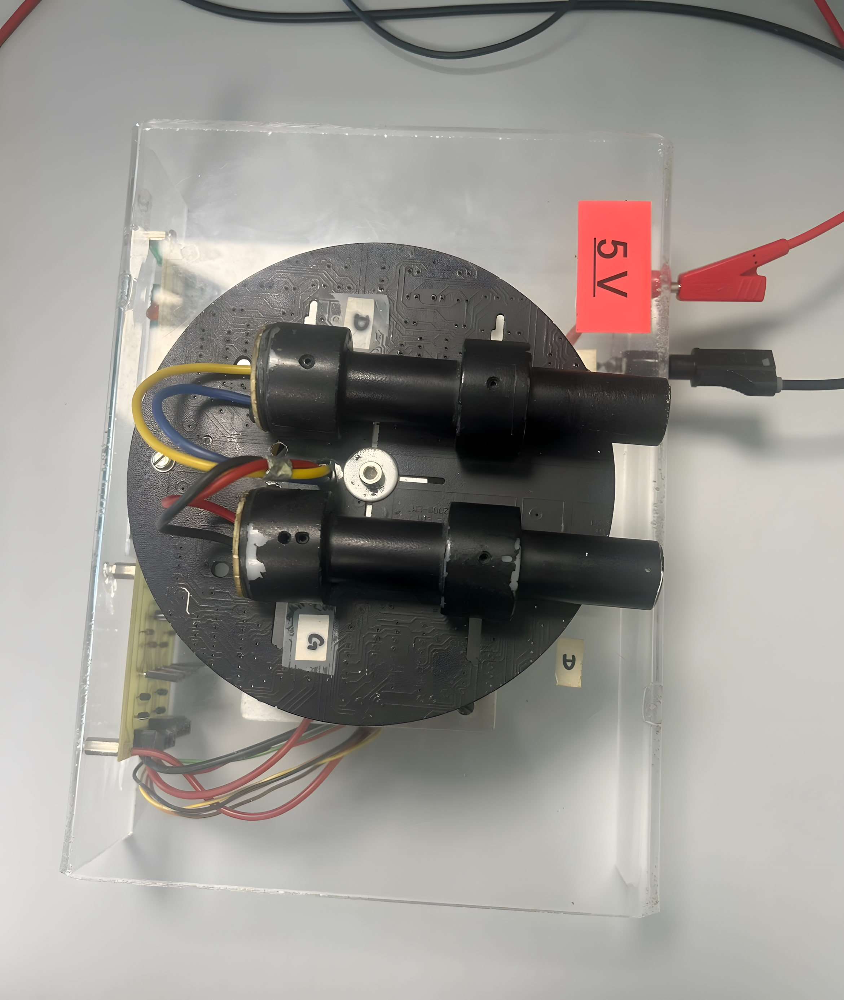
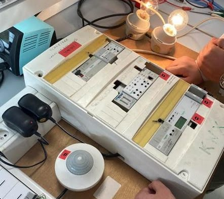

Mes projets
Cliquez sur un projet pour en savoir plus.

Suiveur de ligne analogique
Projet BUT1 - Électronique analogique
Robot suiveur de ligne réalisé en première année de BUT GEII. L'objectif était de concevoir la carte de commande de la maquette, en utilisant uniquement de l'électronique analogique.
La détection de ligne est assurée par des capteurs infrarouges dont le signal analogique est comparé à un seuil à l'aide d'AOPs. Le signal en "tout ou rien" est ensuite envoyé vers des drivers DC qui ajustent la vitesse des moteurs.
- AC11.01 Produire une analyse fonctionnelle d'un système simple
- AC12.02 Identifier un dysfonctionnement
- AC12.03 Décrire un dysfonctionnement

Glissez sur le modèle 3D · Cliquez sur les photos pour les agrandir
Robot résolveur de labyrinthe
Projet BUT2 — Exploration autonome et optimisation de trajectoire
Projet de deuxième année portant sur la conception complète d'un robot mobile autonome capable de résoudre un labyrinthe à cases. Le projet couvre la mécanique, l'électronique et le développement logiciel embarqué.
Résolution en deux phases : exploration via algorithme de main droite avec mémorisation des intersections, puis simplification mathématique du chemin pour une seconde course optimisée. Architecture à base de microcontrôleur PIC et de capteurs ultrasons.
- AC11.01 Produire une analyse fonctionnelle d'un système simple
- AC21.01 Proposer des solutions techniques liées à l'analyse fonctionnelle
- AC21.02 Dérisquer les solutions techniques retenues
- AC31.02 Prouver la pertinence de ses choix technologiques
- AC12.02 Identifier un dysfonctionnement
- AC32.01 Évaluer la cause racine d'un dysfonctionnement
- AC32.02 Proposer une solution corrective


Cliquez sur une image pour l'agrandir
Fish'n'chip 2
Stage BUT2 - LIRMM (équipe SMARTIES), Montpellier — 17 fév. au 25 avr. 2025
Stage de 10 semaines au LIRMM (laboratoire d'informatique, robotique et microélectronique de Montpellier). La Fish'n'chip est circuit électronique embarqué ultra-compact (20,5x60 mm) conçu pour le suivi d'animaux marins (tortues, thons, dauphins). Elle est basée sur un STM32L4 et intègre IMUs, baromètres, GNSS et Bluetooth 5.0. Mon rôle était d'ajouter de nouvelles fonctionnalités et router la version 2 de la carte en vue de sa fabrication.
- Ajout d'un ADC externe 16 bits (ADS8867, 100 kS/s, 400 µA) via bus SPI, avec référence de tension fixe MAX6078 (précision 0,04 %)
- Conception d'un switch d'alimentation MCU-pilotable (TCK127BG) pour désactiver certaines fonctionnalités de la carte, et ainsi économiser l'énergie
- Remplacement de l'oscillateur 32,768 kHz obsolète (ABS04W) - calcul des capacités et de la transconductance selon les application notes STM32
- Correction du circuit de mesure de batterie (pont diviseur + N-MOS NTNS3164NZ) non fonctionnel sur la FNC1
- Réalisation et validation complète d'une carte de test 2 couches pour le nouveau circuit d'alimentation permettant d'alterner entre pile et batterie en fonction de la consommation instantanée
- Routage PCB 6 couches sous KiCAD (20,5x44 mm, −27 % vs FNC1)
- AC21.01 Proposer des solutions techniques liées à l'analyse fonctionnelle
- AC21.02 Dérisquer les solutions techniques retenues
- AC12.02 Identifier un dysfonctionnement
- AC22.01 Identifier les tests et mesures à mettre en place pour valider un système
- AC32.01 Évaluer la cause racine d'un dysfonctionnement
- AC24.01 Appliquer une procédure de fabrication pour implanter les composants

Cliquez sur une image pour l'agrandir
Capteur de température
Projet BUT — Acquisition et traitement de signal
Projet de mesure physique visant à concevoir une chaîne complète d'acquisition de température, depuis le capteur physique jusqu'à l'affichage numérique de la valeur mesurée, en passant par le conditionnement du signal.
Capteur à thermistance NTC / sonde PT100 selon la gamme de température visée. Étage d'amplification par amplificateur opérationnel monté en suiveur de tension, puis conversion analogique-numérique et traitement Python.
- AC11.01 Produire une analyse fonctionnelle d'un système simple
- AC22.01 Identifier les tests et mesures à mettre en place
- AC12.03 Décrire un dysfonctionnement

Cliquez sur une image pour l'agrandir
Tracker de lumière
Projet BUT — Asservissement et contrôle
Projet d'asservissement visant à concevoir un système capable d'orienter automatiquement un panneau photovoltaïque (ou toute surface plane) vers la source lumineuse la plus intense de son environnement.
Détection différentielle par quatre photorécepteurs en croix. La différence de signal entre les capteurs est calculée par un microcontrôleur Arduino qui génère les signaux PWM de commande de deux servomoteurs pour l'orientation pan/tilt.
- AC21.01 Proposer des solutions techniques liées à l'analyse fonctionnelle
- AC21.02 Dérisquer les solutions techniques retenues
- AC32.01 Évaluer la cause racine d'un dysfonctionnement
- AC32.02 Proposer une solution corrective

Cliquez sur une image pour l'agrandir
Câblage domestique
Projet BUT1 — Électrotechnique
Travail de première année de BUT GEII portant sur la réalisation d'une installation électrique domestique sur maquette. L'objectif était de câbler et mettre en service différents circuits de distribution conformément aux normes en vigueur.
- AC11.01 Produire une analyse fonctionnelle d'un système simple
- AC12.02 Identifier un dysfonctionnement
- AC24.01 Appliquer une procédure de fabrication pour implanter les composants